Linux support for controlling displays in Rust
Rahul Rameshbabu or Binary-Eater
Kangrejos 2025

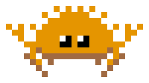
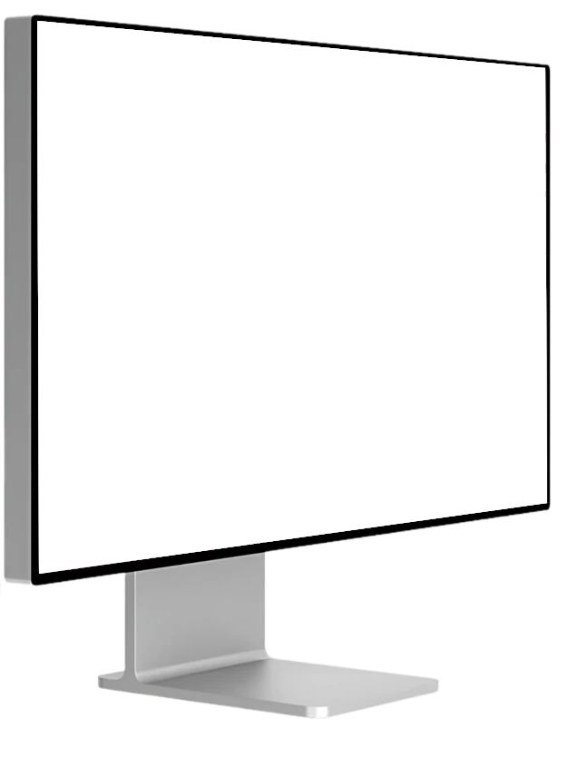
What does "controlling a display" mean?
What does "controlling a display" mean?
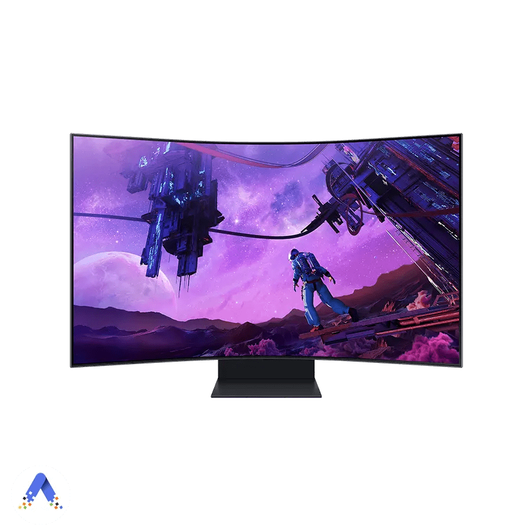
Let's use this monitor to illustrate
What does "controlling a display" mean?
Change the brightness
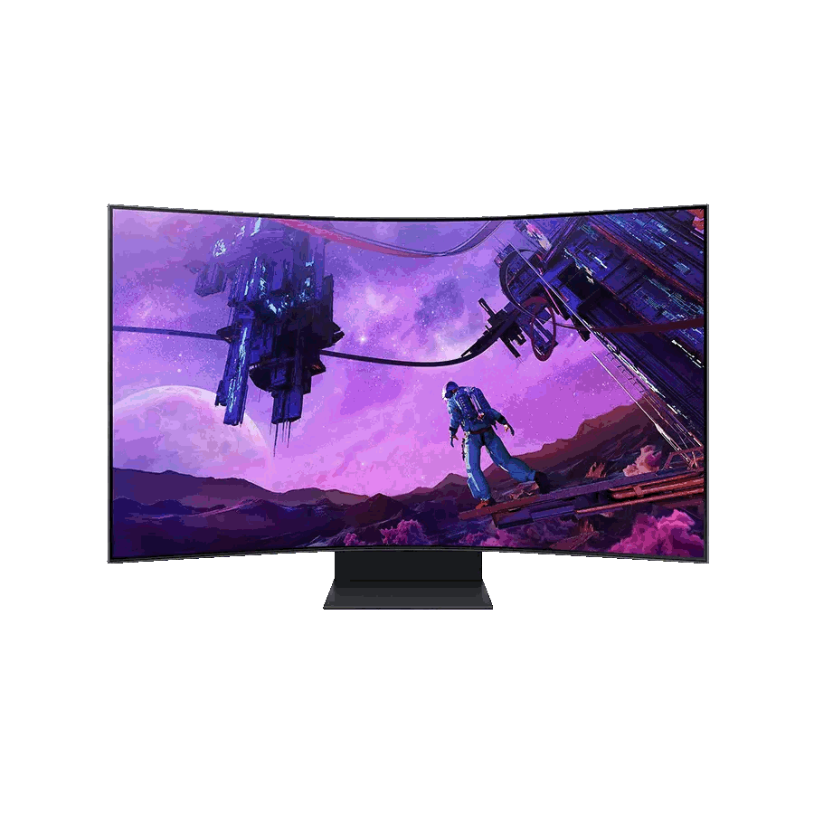
What does "controlling a display" mean?
Adjust the volume of the speaker hw
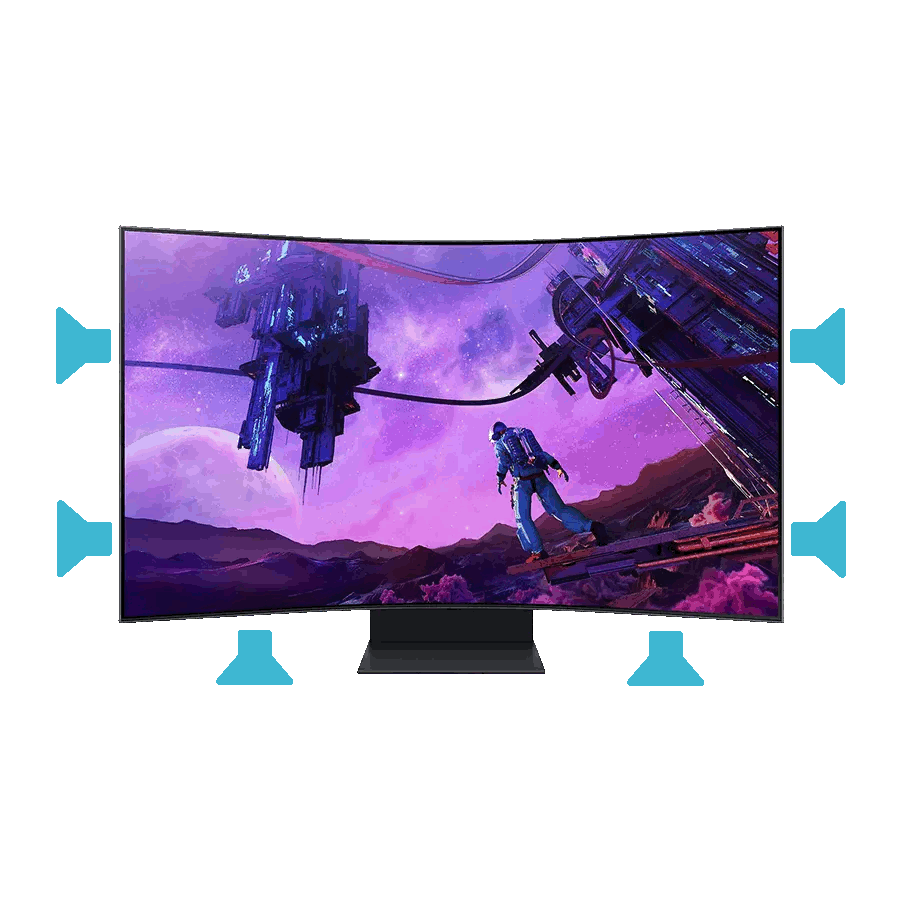
What does "controlling a display" mean?
Selecting the input device
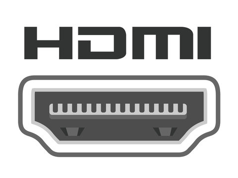
What does this have to do with the Linux kernel?
Isn't this what a monitor's on-screen display (OSD) is for?
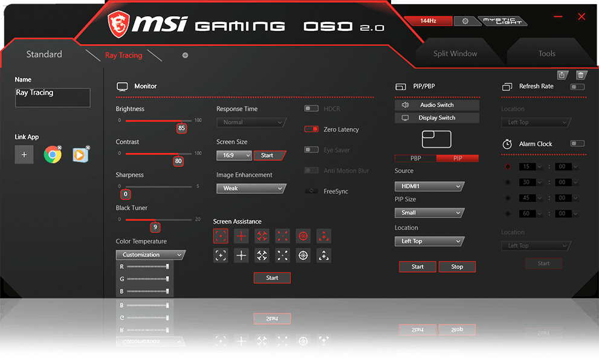
Unfortunately, some monitors don't have a OSD
Introducing the Apple Studio Display and Apple Pro Display XDR
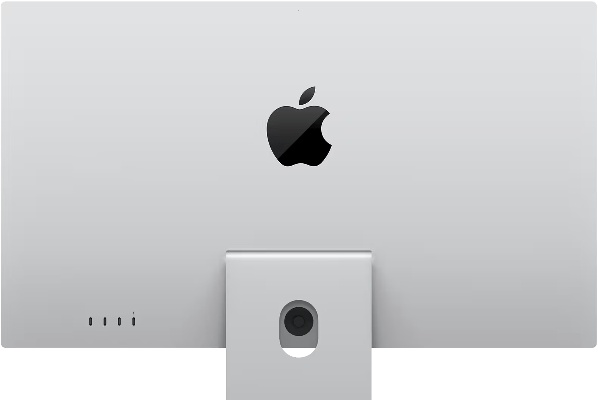
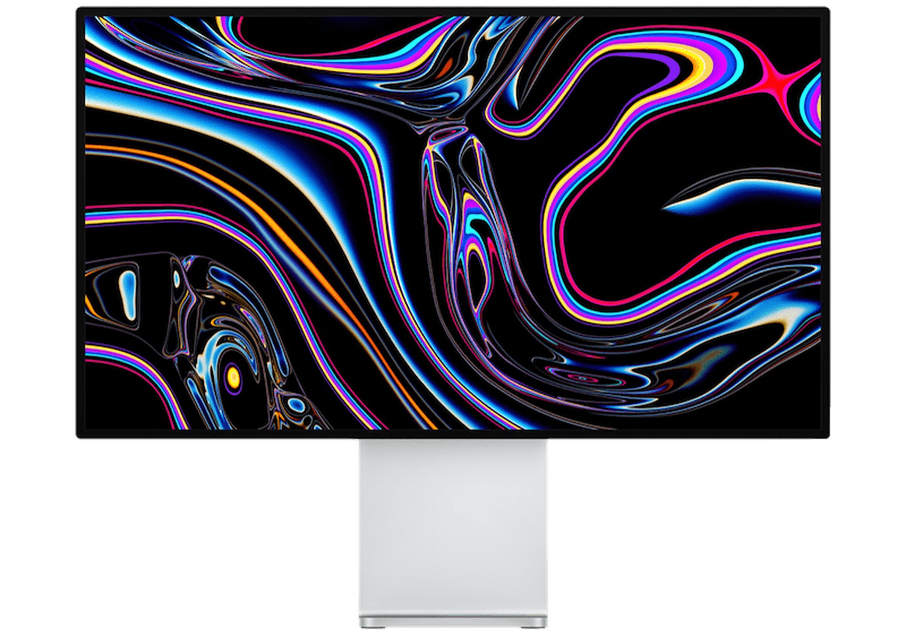
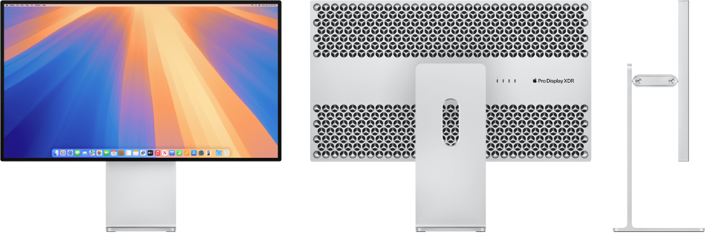
Apple Studio Display
Apple Pro Display XDR
A computer can talk to a monitor to change these settings
Let’s delve into the mechanisms that the operating system can use to manage a monitor
- Monitor Control Command Set (MCCS) describes a high-level communication protocol for controlling properties of a monitor from a host system
- A virtual control panel (VCP) code represents a single instruction in the MCCS for controlling a property of the monitor
- An underlying bi-directional bus is a requirement for MCCS to be implemented over
Let's understand the buses available for MCCS
Display Data Channel/Common Interface (DDC/CI) is the most common bus for implementing MCCS. DDC/CI uses I2C transactions for the communication.
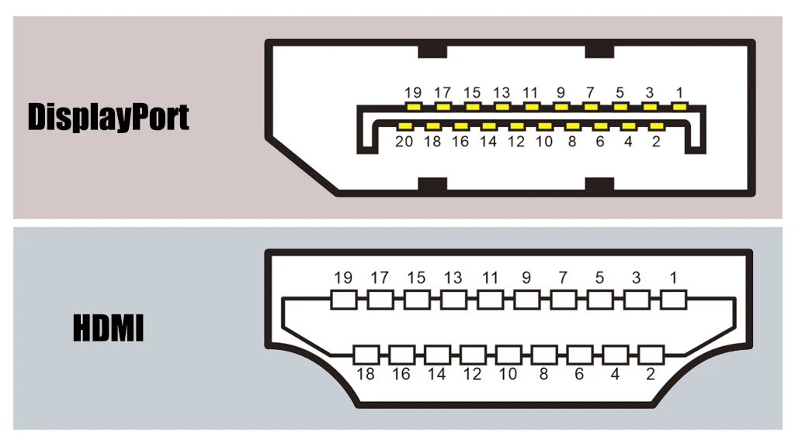
DDC I2C Clock (SCL)
DDC I2C Data (SDA)
DP Aux Channel (-)
DP Aux Channel (+)
NOTE: DisplayPort does not expose physical I2C, so DDC/CI I2C transactions are encapsulated over the DP Aux channel
Let's understand the buses available for MCCS
DDC/CI is supported over the DP aux channel exposed in USB-C DisplayPort Alt Mode
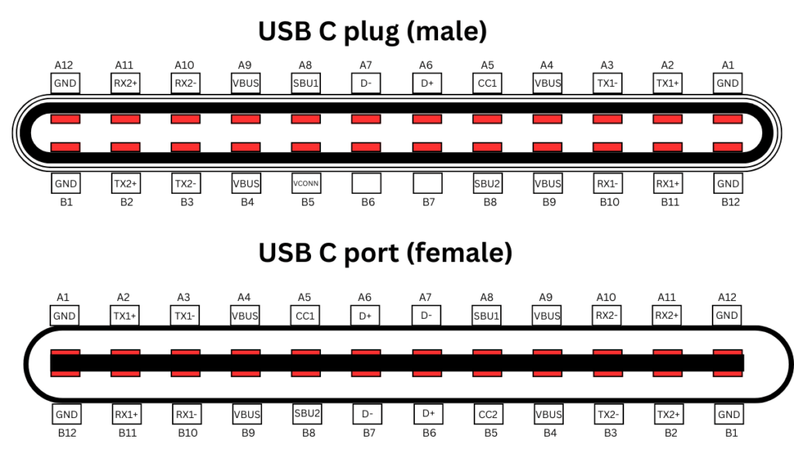
DP Aux Channel (negotiated polarity)
DDC/CI over DP aux channel adds complications involving the abstraction of I2C. Back in 1998, the USB consortium came up with USB Monitor Control Class specification for MCCS over HID. USB-C monitors have made it relevant.
Delving into USB Monitor Control Class
Usage Page (Monitor VESA VCP),
Usage (10h, Brightness),
Logical Minimum (400),
Logical Maximum (60000),
Unit (Centimeter^-2 * Candela),
Unit Exponent (14),
Report Size (32),
Report Count (1),
Feature (Variable, Null State),Let's analyze a decoded HID report descriptor from an Apple Studio Display
This is a HID usage page describing the brightness VCP code (0x10)
The minimum and maximum values accepted for the brightness command
The unit is 10^-2 candela (luminosity) while the exponent is 10^14
There is a single brightness control that takes a 32-bit (4-bytes) value
Has a variable (changing) value and can have null state, for when the monitor is in standby mode due to DPMS.
A quick peek at other OSes
- Windows has a raw Win32 api for DDC/CI
- Apple only implements tightly integrated support for USB Monitor Control Class for the external displays they sell.
- The overall state of MCCS usage in operating systems is not great, leading to a subpar monitor usage experience. This forces users to either have to fiddle with janky built-in monitor controls or be locked out when none exist.
What about Linux?
This question should be split between internal and external panels
Let's start with internal panels
What does the uAPI and userspace interface look like?
/sys/class/backlight/
└── acpi_video0 -> ../../devices/pci0000:00/0000:00:02.0/backlight/acpi_video0
├── actual_brightness
├── bl_power
├── brightness
├── device -> ../../../0000:00:02.0
├── max_brightness
├── power
├── scale
├── subsystem -> ../../../../../class/backlight [recursive, not followed]
├── type
└── ueventThe sysfs interface for controlling brightness in Linux
The biggest problem with this interface is the lack of ability to identify which connector/monitor does the backlight device belong to
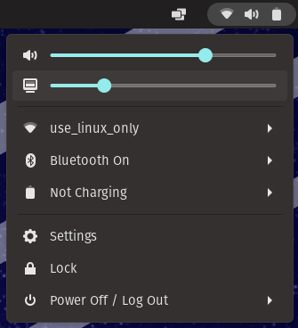
Let's start with internal panels
The kernel API for registering a backlight device
struct backlight_ops {
/**
* @update_status: Operation called when properties have changed.
*/
int (*update_status)(struct backlight_device *);
/**
* @get_brightness: Return the current backlight brightness.
*/
int (*get_brightness)(struct backlight_device *);
/**
* @controls_device: Check against the display device
*/
bool (*controls_device)(struct backlight_device *bd, struct device *display_dev);
};struct backlight_device *
devm_backlight_device_register(struct device *dev, const char *name,
struct device *parent, void *devdata,
const struct backlight_ops *ops,
const struct backlight_properties *props);Helper to register backlight device
Called to update the hardware state
Useful if hardware cannot support full integral range for brightness
Check if backlight hardware is for the display
The acpi_backlight kernel parameter
Easily one of the most configured by laptop users
acpi_backlight can be configured with four values, depending on the design of the laptop
video
ACPI video.ko
none
native
vendor
thinkpad_acpi.ko
asus_laptop.ko
sony_acpi.ko
Let's start with internal panels
Wrinkles with VGA Switcheroo
vga_switcheroo handles laptop hybrid graphics
From the kernel docs:
These come in two flavors:
-
muxed: Dual GPUs with a multiplexer chip to switch outputs between GPUs. -
muxless: Dual GPUs but only one of them is connected to outputs. The other one is merely used to offload rendering, its results are copied over PCIe into the framebuffer. On Linux this is supported with DRI PRIME.
Let's start with internal panels
Wrinkles with VGA Switcheroo
For the discussion of backlight, we only care about the muxed case
laptop iGPU
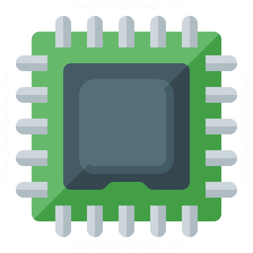
laptop dGPU
gMUX
bool (struct backlight_ops).(*controls_device)bool (struct backlight_ops).(*controls_device)true
false
true
false
So what makes internal internal panels so different from external panels?
Modern laptop panels use Embedded DisplayPort (eDP), replacing low-voltage differential signaling (LVDS)
The goal of eDP is to re-use the DisplayPort protocol for internal panels
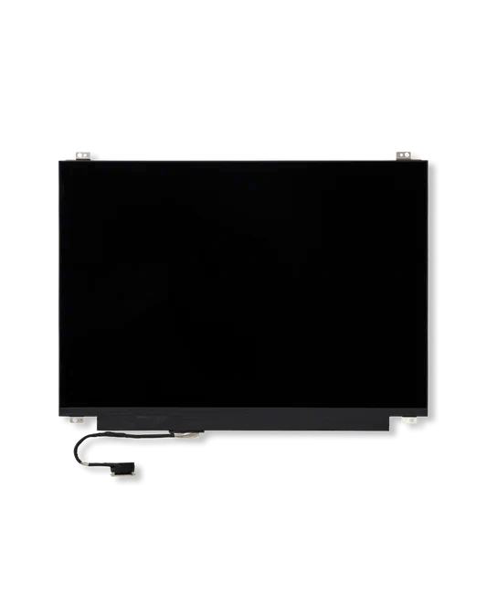
eDP is not so magical
On DisplayPort, we can do the following with i2c over the DP Aux channel
i2c address
Functionality
0x37
0x50
versus eDP
DDC/CI
Read EDID
0x37
0x50
Read EDID
unimplemented
eDP does not implement DDC/CI, like LVDS, meaning the panel needs custom programming to control
State of Linux for controlling external panels
Only DDC/CI is supported in the kernel API in a very raw manner
/**
* ...
*
* Ensures that the ddc field of the connector is correctly set.
*
* ...
*/
int drm_connector_init_with_ddc(struct drm_device *dev,
struct drm_connector *connector,
const struct drm_connector_funcs *funcs,
int connector_type,
struct i2c_adapter *ddc);
int drmm_connector_init(struct drm_device *dev,
struct drm_connector *connector,
const struct drm_connector_funcs *funcs,
int connector_type,
struct i2c_adapter *ddc);These two helper functions just call into other DRM connector initialization helper functions.
Just gets assigned to connector->ddc for bookkeeping purposes
State of Linux for controlling external panels
Let's look at how amdgpu handles setting up DDC/CI
/*
* detect_link_and_local_sink() - Detect if a sink is attached to a given link
*
* link->local_sink is created or destroyed as needed.
*
* This does not create remote sinks.
*/
static bool detect_link_and_local_sink(struct dc_link *link,
enum dc_detect_reason reason)
{
/* code omitted */
/* From Disconnected-to-Connected. */
switch (link->connector_signal) {
case SIGNAL_TYPE_HDMI_TYPE_A: {
sink_caps.transaction_type = DDC_TRANSACTION_TYPE_I2C;
if (aud_support->hdmi_audio_native)
sink_caps.signal = SIGNAL_TYPE_HDMI_TYPE_A;
else
sink_caps.signal = SIGNAL_TYPE_DVI_SINGLE_LINK;
break;
}
case SIGNAL_TYPE_DVI_SINGLE_LINK: {
sink_caps.transaction_type = DDC_TRANSACTION_TYPE_I2C;
sink_caps.signal = SIGNAL_TYPE_DVI_SINGLE_LINK;
break;
}
case SIGNAL_TYPE_DVI_DUAL_LINK: {
sink_caps.transaction_type = DDC_TRANSACTION_TYPE_I2C;
sink_caps.signal = SIGNAL_TYPE_DVI_DUAL_LINK;
break;
}
case SIGNAL_TYPE_LVDS: {
sink_caps.transaction_type = DDC_TRANSACTION_TYPE_I2C;
sink_caps.signal = SIGNAL_TYPE_LVDS;
break;
}
case SIGNAL_TYPE_EDP: {
detect_edp_sink_caps(link);
read_current_link_settings_on_detect(link);
/* Disable power sequence on MIPI panel + converter
*/
if (dc->config.enable_mipi_converter_optimization &&
dc_ctx->dce_version == DCN_VERSION_3_01 &&
link->dpcd_caps.sink_dev_id == DP_BRANCH_DEVICE_ID_0022B9 &&
memcmp(&link->dpcd_caps.branch_dev_name, DP_SINK_BRANCH_DEV_NAME_7580,
sizeof(link->dpcd_caps.branch_dev_name)) == 0) {
dc->config.edp_no_power_sequencing = true;
if (!link->dpcd_caps.set_power_state_capable_edp)
link->wa_flags.dp_keep_receiver_powered = true;
}
sink_caps.transaction_type = DDC_TRANSACTION_TYPE_I2C_OVER_AUX;
sink_caps.signal = SIGNAL_TYPE_EDP;
break;
}
case SIGNAL_TYPE_DISPLAY_PORT: {
/* wa HPD high coming too early*/
if (link->ep_type == DISPLAY_ENDPOINT_PHY &&
link->link_enc->features.flags.bits.DP_IS_USB_C == 1) {
/* if alt mode times out, return false */
if (!wait_for_entering_dp_alt_mode(link))
return false;
}
if (!detect_dp(link, &sink_caps, reason)) {
if (prev_sink)
dc_sink_release(prev_sink);
return false;
}
/* Active SST downstream branch device unplug*/
if (link->type == dc_connection_sst_branch &&
link->dpcd_caps.sink_count.bits.SINK_COUNT == 0) {
if (prev_sink)
/* Downstream unplug */
dc_sink_release(prev_sink);
return true;
}
/* disable audio for non DP to HDMI active sst converter */
if (link->type == dc_connection_sst_branch &&
is_dp_active_dongle(link) &&
(link->dpcd_caps.dongle_type !=
DISPLAY_DONGLE_DP_HDMI_CONVERTER))
converter_disable_audio = true;
/* limited link rate to HBR3 for DPIA until we implement USB4 V2 */
if (link->ep_type == DISPLAY_ENDPOINT_USB4_DPIA &&
link->reported_link_cap.link_rate > LINK_RATE_HIGH3)
link->reported_link_cap.link_rate = LINK_RATE_HIGH3;
if (link->dpcd_caps.usb4_dp_tun_info.dp_tun_cap.bits.dp_tunneling
&& link->dpcd_caps.usb4_dp_tun_info.dp_tun_cap.bits.dpia_bw_alloc
&& link->dpcd_caps.usb4_dp_tun_info.driver_bw_cap.bits.driver_bw_alloc_support) {
if (link_dpia_enable_usb4_dp_bw_alloc_mode(link) == false)
link->dpcd_caps.usb4_dp_tun_info.dp_tun_cap.bits.dpia_bw_alloc = false;
}
break;
}
default:
DC_ERROR("Invalid connector type! signal:%d\n",
link->connector_signal);
if (prev_sink)
dc_sink_release(prev_sink);
return false;
} /* switch() */
/* code omitted */
set_ddc_transaction_type(link->ddc,
sink_caps.transaction_type);
/* code omitted */
}For a number of signal types like HDMI, amdgpu identifies DDC transactions to be type i2c.
DisplayPort gets complicated. We will discuss this soon.
Finally, amdgpu sets the transaction type for the link itself.
State of Linux for controlling external panels
Let's explore the DisplayPort case for amdgpu
static bool detect_dp(struct dc_link *link,
struct display_sink_capability *sink_caps,
enum dc_detect_reason reason)
{
struct audio_support *audio_support = &link->dc->res_pool->audio_support;
sink_caps->signal = link_detect_sink_signal_type(link, reason);
sink_caps->transaction_type =
get_ddc_transaction_type(sink_caps->signal);
if (sink_caps->transaction_type == DDC_TRANSACTION_TYPE_I2C_OVER_AUX) {
sink_caps->signal = SIGNAL_TYPE_DISPLAY_PORT;
if (!detect_dp_sink_caps(link)) {
return false;
}
if (is_dp_branch_device(link))
/* DP SST branch */
link->type = dc_connection_sst_branch;
} else {
if (link->dc->debug.disable_dp_plus_plus_wa &&
link->link_enc->features.flags.bits.IS_UHBR20_CAPABLE)
return false;
/* DP passive dongles */
sink_caps->signal = dp_passive_dongle_detection(link->ddc,
sink_caps,
audio_support);
link->dpcd_caps.dongle_type = sink_caps->dongle_type;
link->dpcd_caps.is_dongle_type_one = sink_caps->is_dongle_type_one;
link->dpcd_caps.dpcd_rev.raw = 0;
link->dpcd_caps.usb4_dp_tun_info.dp_tun_cap.raw = 0;
}
return true;
}amdgpu determines if the i2c transactions are native or goes over DP Aux based on if the signal is DisplayPort or is being passively converted due to features like DP++.
The logic when the signal is pure DisplayPort.
DisplayPort is really complex due to DP++ and USB4 DP tunneling.
State of Linux for controlling external panels
amdgpu creates an i2c_adapter interface for DDC/CI
static struct amdgpu_i2c_adapter *
create_i2c(struct ddc_service *ddc_service, bool oem)
{
struct amdgpu_device *adev = ddc_service->ctx->driver_context;
struct amdgpu_i2c_adapter *i2c;
i2c = kzalloc(sizeof(struct amdgpu_i2c_adapter), GFP_KERNEL);
if (!i2c)
return NULL;
i2c->base.owner = THIS_MODULE;
i2c->base.dev.parent = &adev->pdev->dev;
i2c->base.algo = &amdgpu_dm_i2c_algo;
if (oem)
snprintf(i2c->base.name, sizeof(i2c->base.name), "AMDGPU DM i2c OEM bus");
else
snprintf(i2c->base.name, sizeof(i2c->base.name), "AMDGPU DM i2c hw bus %d",
ddc_service->link->link_index);
i2c_set_adapdata(&i2c->base, i2c);
i2c->ddc_service = ddc_service;
i2c->oem = oem;
return i2c;
}amdgpu creates an i2c_adapter for DDC/CI that will be either a pure i2c interface or i2c over DP Aux.
State of Linux for controlling external panels
amdgpu plumbs the i2c_adapter to the drm_connector
/*
* Note: this function assumes that dc_link_detect() was called for the
* dc_link which will be represented by this aconnector.
*/
static int amdgpu_dm_connector_init(struct amdgpu_display_manager *dm,
struct amdgpu_dm_connector *aconnector,
u32 link_index,
struct amdgpu_encoder *aencoder)
{
int res = 0;
int connector_type;
struct dc *dc = dm->dc;
struct dc_link *link = dc_get_link_at_index(dc, link_index);
struct amdgpu_i2c_adapter *i2c;
/* Not needed for writeback connector */
link->priv = aconnector;
i2c = create_i2c(link->ddc, false);
if (!i2c) {
drm_err(adev_to_drm(dm->adev), "Failed to create i2c adapter data\n");
return -ENOMEM;
}
aconnector->i2c = i2c;
res = i2c_add_adapter(&i2c->base);
if (res) {
drm_err(adev_to_drm(dm->adev), "Failed to register hw i2c %d\n", link->link_index);
goto out_free;
}
connector_type = to_drm_connector_type(link->connector_signal);
res = drm_connector_init_with_ddc(
dm->ddev,
&aconnector->base,
&amdgpu_dm_connector_funcs,
connector_type,
&i2c->base);
/* code omitted */The created i2c_adapter gets passed to the DRM connector initialization helper
State of Linux for controlling external panels
Userspace use of the i2c_adapter
ddcutil reads and writes /dev/i2c* device nodes. Either the user can specify an explicit bus to use or ddcutil will crawl through the exposed nodes to see which ones are for DDC/CI
sudo strace -e openat ddcutil probe |& grep /dev/i2c
openat(AT_FDCWD, "/dev/i2c-5", O_RDWR) = 3
openat(AT_FDCWD, "/dev/i2c-6", O_RDWR) = 3
openat(AT_FDCWD, "/dev/i2c-7", O_RDWR) = 3
openat(AT_FDCWD, "/dev/i2c-8", O_RDWR) = 3
openat(AT_FDCWD, "/dev/i2c-9", O_RDWR) = 3
openat(AT_FDCWD, "/dev/i2c-10", O_RDWR) = 3
openat(AT_FDCWD, "/dev/i2c-11", O_RDWR) = 3
openat(AT_FDCWD, "/dev/i2c-12", O_RDWR) = 3
openat(AT_FDCWD, "/dev/i2c-13", O_RDWR) = 3
openat(AT_FDCWD, "/dev/i2c-14", O_RDWR) = 3
openat(AT_FDCWD, "/dev/i2c-15", O_RDWR) = 3
openat(AT_FDCWD, "/dev/i2c-16", O_RDWR) = 3
openat(AT_FDCWD, "/dev/i2c-17", O_RDWR) = 3
openat(AT_FDCWD, "/dev/i2c-14", O_RDWR) = 3NOTE: ddcutil also support USB Monitor Control Class
How do we improve the situation with regards to monitor control on Linux?
A high-level overview
userspace
hardware
kernelspace
libdrm
wl_monitor
Wayland compositor
Change brightness/volume/etc.
drm_connector monitor control property
drm_connector and related helpers
Monitor control implementation
#1
#2
#3
DDC/CI
Custom protocol
HID
Minor caveats
- For certain panels, the ability to have some kind of policy mechanism for control implementations will be necessary.
- In particular, laptop panels can have a variety of implementations for brightness control, and monitors can support both USB Monitor Control Class and DDC/CI.
- Scoping the API at the
drm_connectorlevel works well with mux-able hybrid graphics. One caveat is when the gMUX or an external controller controls the brightness. Being able to attach implementations to adrm_connectorsolves this issue.
Ok, what does any of this have to do with Rust for Linux?
My ambitions
The work I have posted so far to the rust-for-linux mailing list is intended as building blocks to implement the architecture I discussed in Rust.
- I plan to implement the USB Monitor Control Class support for USB monitors in Rust
- I have posted HID abstractions to use for this effort
-
I have proposed a means for extending functionality of
drm_connectorin Rust - In the next couple of slides, I will discuss these efforts
HID Abstractions in Rust
To begin with, I have created a simple Rust reference driver, GloriousRust, for making the Glorious Model O mouse function correctly.
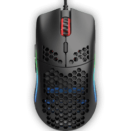
Without this type of "fixup" driver, the inputs of the mouse will be ignored by the core HID handling in the kernel.
Let's delve into the Rust driver code.
HID Abstractions in Rust
Analyzing the GloriousRust driver
// SPDX-License-Identifier: GPL-2.0
// Copyright (C) 2025 Rahul Rameshbabu <sergeantsagara@protonmail.com>
//! Rust reference HID driver for Glorious Model O and O- mice.
use kernel::{self, bindings, device, hid, prelude::*};
struct GloriousRust;
kernel::hid_device_table!(
HID_TABLE,
MODULE_HID_TABLE,
<GloriousRust as hid::Driver>::IdInfo,
[(
hid::DeviceId::new_usb(
hid::Group::Generic,
bindings::USB_VENDOR_ID_SINOWEALTH,
bindings::USB_DEVICE_ID_GLORIOUS_MODEL_O,
),
(),
)]
);
#[vtable]
impl hid::Driver for GloriousRust {
type IdInfo = ();
const ID_TABLE: hid::IdTable<Self::IdInfo> = &HID_TABLE;
/// Fix the Glorious Model O and O- consumer input report descriptor to use
/// the variable and relative flag, while clearing the const flag.
///
/// Without this fixup, inputs from the mice will be ignored.
fn report_fixup<'a, 'b: 'a>(hdev: &hid::Device<device::Core>, rdesc: &'b mut [u8]) -> &'a [u8] {
if rdesc.len() == 213
&& (rdesc[84] == 129 && rdesc[85] == 3)
&& (rdesc[112] == 129 && rdesc[113] == 3)
&& (rdesc[140] == 129 && rdesc[141] == 3)
{
dev_info!(
hdev.as_ref(),
"patching Glorious Model O consumer control report descriptor\n"
);
rdesc[85] = hid::MAIN_ITEM_VARIABLE | hid::MAIN_ITEM_RELATIVE;
rdesc[113] = hid::MAIN_ITEM_VARIABLE | hid::MAIN_ITEM_RELATIVE;
rdesc[141] = hid::MAIN_ITEM_VARIABLE | hid::MAIN_ITEM_RELATIVE;
}
rdesc
}
}
kernel::module_hid_driver! {
type: GloriousRust,
name: "GloriousRust",
authors: ["Rahul Rameshbabu <sergeantsagara@protonmail.com>"],
description: "Rust reference HID driver for Glorious Model O and O- mice",
license: "GPL",
}1. Declare the device table for matching devices to the driver
2. Use the macro that sets up the kernel module
3. Implement the hid::Driver trait's report_fixup to make the mouse usable
HID Abstractions in Rust
Quickly going over the core code
// SPDX-License-Identifier: GPL-2.0
// Copyright (C) 2025 Rahul Rameshbabu <sergeantsagara@protonmail.com>
//! Abstractions for the HID interface.
//!
//! C header: [`include/linux/hid.h`](srctree/include/linux/hid.h)
use crate::{device, device_id::RawDeviceId, driver, error::*, prelude::*, types::Opaque};
use core::{
marker::PhantomData,
ptr::{addr_of_mut, NonNull},
};
/// Indicates the item is static read-only.
///
/// Refer to [Device Class Definition for HID 1.11]
/// Section 6.2.2.5 Input, Output, and Feature Items.
///
/// [Device Class Definition for HID 1.11]: https://www.usb.org/sites/default/files/hid1_11.pdf
pub const MAIN_ITEM_CONSTANT: u8 = bindings::HID_MAIN_ITEM_CONSTANT as u8;
/// Indicates the item represents data from a physical control.
///
/// Refer to [Device Class Definition for HID 1.11]
/// Section 6.2.2.5 Input, Output, and Feature Items.
///
/// [Device Class Definition for HID 1.11]: https://www.usb.org/sites/default/files/hid1_11.pdf
pub const MAIN_ITEM_VARIABLE: u8 = bindings::HID_MAIN_ITEM_VARIABLE as u8;
/// Indicates the item should be treated as a relative change from the previous
/// report.
///
/// Refer to [Device Class Definition for HID 1.11]
/// Section 6.2.2.5 Input, Output, and Feature Items.
///
/// [Device Class Definition for HID 1.11]: https://www.usb.org/sites/default/files/hid1_11.pdf
pub const MAIN_ITEM_RELATIVE: u8 = bindings::HID_MAIN_ITEM_RELATIVE as u8;
/// Indicates the item should wrap around when reaching the extreme high or
/// extreme low values.
///
/// Refer to [Device Class Definition for HID 1.11]
/// Section 6.2.2.5 Input, Output, and Feature Items.
///
/// [Device Class Definition for HID 1.11]: https://www.usb.org/sites/default/files/hid1_11.pdf
pub const MAIN_ITEM_WRAP: u8 = bindings::HID_MAIN_ITEM_WRAP as u8;
/// Indicates the item should wrap around when reaching the extreme high or
/// extreme low values.
///
/// Refer to [Device Class Definition for HID 1.11]
/// Section 6.2.2.5 Input, Output, and Feature Items.
///
/// [Device Class Definition for HID 1.11]: https://www.usb.org/sites/default/files/hid1_11.pdf
pub const MAIN_ITEM_NONLINEAR: u8 = bindings::HID_MAIN_ITEM_NONLINEAR as u8;
/// Indicates whether the control has a preferred state it will physically
/// return to without user intervention.
///
/// Refer to [Device Class Definition for HID 1.11]
/// Section 6.2.2.5 Input, Output, and Feature Items.
///
/// [Device Class Definition for HID 1.11]: https://www.usb.org/sites/default/files/hid1_11.pdf
pub const MAIN_ITEM_NO_PREFERRED: u8 = bindings::HID_MAIN_ITEM_NO_PREFERRED as u8;
/// Indicates whether the control has a physical state where it will not send
/// any reports.
///
/// Refer to [Device Class Definition for HID 1.11]
/// Section 6.2.2.5 Input, Output, and Feature Items.
///
/// [Device Class Definition for HID 1.11]: https://www.usb.org/sites/default/files/hid1_11.pdf
pub const MAIN_ITEM_NULL_STATE: u8 = bindings::HID_MAIN_ITEM_NULL_STATE as u8;
/// Indicates whether the control requires host system logic to change state.
///
/// Refer to [Device Class Definition for HID 1.11]
/// Section 6.2.2.5 Input, Output, and Feature Items.
///
/// [Device Class Definition for HID 1.11]: https://www.usb.org/sites/default/files/hid1_11.pdf
pub const MAIN_ITEM_VOLATILE: u8 = bindings::HID_MAIN_ITEM_VOLATILE as u8;
/// Indicates whether the item is fixed size or a variable buffer of bytes.
///
/// Refer to [Device Class Definition for HID 1.11]
/// Section 6.2.2.5 Input, Output, and Feature Items.
///
/// [Device Class Definition for HID 1.11]: https://www.usb.org/sites/default/files/hid1_11.pdf
pub const MAIN_ITEM_BUFFERED_BYTE: u8 = bindings::HID_MAIN_ITEM_BUFFERED_BYTE as u8;
/// HID device groups are intended to help categories HID devices based on a set
/// of common quirks and logic that they will require to function correctly.
#[repr(u16)]
pub enum Group {
/// Used to match a device against any group when probing.
Any = bindings::HID_GROUP_ANY as u16,
/// Indicates a generic device that should need no custom logic from the
/// core HID stack.
Generic = bindings::HID_GROUP_GENERIC as u16,
/// Maps multitouch devices to hid-multitouch instead of hid-generic.
Multitouch = bindings::HID_GROUP_MULTITOUCH as u16,
/// Used for autodetecing and mapping of HID sensor hubs to
/// hid-sensor-hub.
SensorHub = bindings::HID_GROUP_SENSOR_HUB as u16,
/// Used for autodetecing and mapping Win 8 multitouch devices to set the
/// needed quirks.
MultitouchWin8 = bindings::HID_GROUP_MULTITOUCH_WIN_8 as u16,
// Vendor-specific device groups.
/// Used to distinguish Synpatics touchscreens from other products. The
/// touchscreens will be handled by hid-multitouch instead, while everything
/// else will be managed by hid-rmi.
RMI = bindings::HID_GROUP_RMI as u16,
/// Used for hid-core handling to automatically identify Wacom devices and
/// have them probed by hid-wacom.
Wacom = bindings::HID_GROUP_WACOM as u16,
/// Used by logitech-djreceiver and logitech-djdevice to autodetect if
/// devices paied to the DJ receivers are DJ devices and handle them with
/// the device driver.
LogitechDJDevice = bindings::HID_GROUP_LOGITECH_DJ_DEVICE as u16,
/// Since the Valve Steam Controller only has vendor-specific usages,
/// prevent hid-generic from parsing its reports since there would be
/// nothing hid-generic could do for the device.
Steam = bindings::HID_GROUP_STEAM as u16,
/// Used to differentiate 27 Mhz frequency Logitech DJ devices from other
/// Logitech DJ devices.
Logitech27MHzDevice = bindings::HID_GROUP_LOGITECH_27MHZ_DEVICE as u16,
/// Used for autodetecting and mapping Vivaldi devices to hid-vivaldi.
Vivaldi = bindings::HID_GROUP_VIVALDI as u16,
}
// TODO: use `const_trait_impl` once stabilized:
//
// ```
// impl const From<Group> for u16 {
// /// [`Group`] variants are represented by [`u16`] values.
// fn from(value: Group) -> Self {
// value as Self
// }
// }
// ```
impl Group {
/// Internal function used to convert [`Group`] variants into [`u16`].
const fn into(self) -> u16 {
self as u16
}
}
impl From<u16> for Group {
/// [`u16`] values can be safely converted to [`Group`] variants.
fn from(value: u16) -> Self {
match value.into() {
bindings::HID_GROUP_GENERIC => Group::Generic,
bindings::HID_GROUP_MULTITOUCH => Group::Multitouch,
bindings::HID_GROUP_SENSOR_HUB => Group::SensorHub,
bindings::HID_GROUP_MULTITOUCH_WIN_8 => Group::MultitouchWin8,
bindings::HID_GROUP_RMI => Group::RMI,
bindings::HID_GROUP_WACOM => Group::Wacom,
bindings::HID_GROUP_LOGITECH_DJ_DEVICE => Group::LogitechDJDevice,
bindings::HID_GROUP_STEAM => Group::Steam,
bindings::HID_GROUP_LOGITECH_27MHZ_DEVICE => Group::Logitech27MHzDevice,
bindings::HID_GROUP_VIVALDI => Group::Vivaldi,
_ => Group::Any,
}
}
}
/// The HID device representation.
///
/// This structure represents the Rust abstraction for a C `struct hid_device`.
/// The implementation abstracts the usage of an already existing C `struct
/// hid_device` within Rust code that we get passed from the C side.
///
/// # Invariants
///
/// A [`Device`] instance represents a valid `struct hid_device` created by the
/// C portion of the kernel.
#[repr(transparent)]
pub struct Device<Ctx: device::DeviceContext = device::Normal>(
Opaque<bindings::hid_device>,
PhantomData<Ctx>,
);
impl<Ctx: device::DeviceContext> Device<Ctx> {
fn as_raw(&self) -> *mut bindings::hid_device {
self.0.get()
}
/// Returns the HID transport bus ID.
pub fn bus(&self) -> u16 {
// SAFETY: `self.as_raw` is a valid pointer to a `struct hid_device`
unsafe { *self.as_raw() }.bus
}
/// Returns the HID report group.
pub fn group(&self) -> Group {
// SAFETY: `self.as_raw` is a valid pointer to a `struct hid_device`
unsafe { *self.as_raw() }.group.into()
}
/// Returns the HID vendor ID.
pub fn vendor(&self) -> u32 {
// SAFETY: `self.as_raw` is a valid pointer to a `struct hid_device`
unsafe { *self.as_raw() }.vendor
}
/// Returns the HID product ID.
pub fn product(&self) -> u32 {
// SAFETY: `self.as_raw` is a valid pointer to a `struct hid_device`
unsafe { *self.as_raw() }.product
}
}
// SAFETY: `Device` is a transparent wrapper of a type that doesn't depend on `Device`'s generic
// argument.
kernel::impl_device_context_deref!(unsafe { Device });
kernel::impl_device_context_into_aref!(Device);
// SAFETY: Instances of `Device` are always reference-counted.
unsafe impl crate::types::AlwaysRefCounted for Device {
fn inc_ref(&self) {
// SAFETY: The existence of a shared reference guarantees that the refcount is non-zero.
unsafe { bindings::get_device(&raw mut (*self.as_raw()).dev) };
}
unsafe fn dec_ref(obj: NonNull<Self>) {
// SAFETY: The safety requirements guarantee that the refcount is non-zero.
unsafe { bindings::put_device(&raw mut (*obj.cast::<bindings::hid_device>().as_ptr()).dev) }
}
}
impl<Ctx: device::DeviceContext> AsRef<device::Device<Ctx>> for Device<Ctx> {
fn as_ref(&self) -> &device::Device<Ctx> {
// SAFETY: By the type invariant of `Self`, `self.as_raw()` is a pointer to a valid
// `struct hid_device`.
let dev = unsafe { addr_of_mut!((*self.as_raw()).dev) };
// SAFETY: `dev` points to a valid `struct device`.
unsafe { device::Device::as_ref(dev) }
}
}
/// Abstraction for the HID device ID structure `struct hid_device_id`.
#[repr(transparent)]
#[derive(Clone, Copy)]
pub struct DeviceId(bindings::hid_device_id);
impl DeviceId {
/// Equivalent to C's `HID_USB_DEVICE` macro.
///
/// Create a new `hid::DeviceId` from a group, vendor ID, and device ID
/// number.
pub const fn new_usb(group: Group, vendor: u32, product: u32) -> Self {
Self(bindings::hid_device_id {
bus: 0x3, // BUS_USB
group: group.into(),
vendor,
product,
driver_data: 0,
})
}
/// Returns the HID transport bus ID.
pub fn bus(&self) -> u16 {
self.0.bus
}
/// Returns the HID report group.
pub fn group(&self) -> Group {
self.0.group.into()
}
/// Returns the HID vendor ID.
pub fn vendor(&self) -> u32 {
self.0.vendor
}
/// Returns the HID product ID.
pub fn product(&self) -> u32 {
self.0.product
}
}
// SAFETY:
// * `DeviceId` is a `#[repr(transparent)` wrapper of `hid_device_id` and does not add
// additional invariants, so it's safe to transmute to `RawType`.
// * `DRIVER_DATA_OFFSET` is the offset to the `driver_data` field.
unsafe impl RawDeviceId for DeviceId {
type RawType = bindings::hid_device_id;
const DRIVER_DATA_OFFSET: usize = core::mem::offset_of!(bindings::hid_device_id, driver_data);
fn index(&self) -> usize {
self.0.driver_data
}
}
/// [`IdTable`] type for HID.
pub type IdTable<T> = &'static dyn kernel::device_id::IdTable<DeviceId, T>;
/// Create a HID [`IdTable`] with its alias for modpost.
#[macro_export]
macro_rules! hid_device_table {
($table_name:ident, $module_table_name:ident, $id_info_type: ty, $table_data: expr) => {
const $table_name: $crate::device_id::IdArray<
$crate::hid::DeviceId,
$id_info_type,
{ $table_data.len() },
> = $crate::device_id::IdArray::new($table_data);
$crate::module_device_table!("hid", $module_table_name, $table_name);
};
}
/// The HID driver trait.
///
/// # Examples
///
/// ```
/// use kernel::{bindings, device, hid};
///
/// struct MyDriver;
///
/// kernel::hid_device_table!(
/// HID_TABLE,
/// MODULE_HID_TABLE,
/// <MyDriver as hid::Driver>::IdInfo,
/// [(
/// hid::DeviceId::new_usb(
/// hid::Group::Steam,
/// bindings::USB_VENDOR_ID_VALVE,
/// bindings::USB_DEVICE_ID_STEAM_DECK,
/// ),
/// (),
/// )]
/// );
///
/// #[vtable]
/// impl hid::Driver for MyDriver {
/// type IdInfo = ();
/// const ID_TABLE: hid::IdTable<Self::IdInfo> = &HID_TABLE;
///
/// /// This function is optional to implement.
/// fn report_fixup<'a, 'b: 'a>(_hdev: &hid::Device<device::Core>, rdesc: &'b mut [u8]) -> &'a [u8] {
/// // Perform some report descriptor fixup.
/// rdesc
/// }
/// }
/// ```
/// Drivers must implement this trait in order to get a HID driver registered.
/// Please refer to the `Adapter` documentation for an example.
#[vtable]
pub trait Driver: Send {
/// The type holding information about each device id supported by the driver.
// TODO: Use `associated_type_defaults` once stabilized:
//
// ```
// type IdInfo: 'static = ();
// ```
type IdInfo: 'static;
/// The table of device ids supported by the driver.
const ID_TABLE: IdTable<Self::IdInfo>;
/// Called before report descriptor parsing. Can be used to mutate the
/// report descriptor before the core HID logic processes the descriptor.
/// Useful for problematic report descriptors that prevent HID devices from
/// functioning correctly.
///
/// Optional to implement.
fn report_fixup<'a, 'b: 'a>(_hdev: &Device<device::Core>, _rdesc: &'b mut [u8]) -> &'a [u8] {
build_error!(VTABLE_DEFAULT_ERROR)
}
}
/// An adapter for the registration of HID drivers.
pub struct Adapter<T: Driver>(T);
// SAFETY: A call to `unregister` for a given instance of `RegType` is guaranteed to be valid if
// a preceding call to `register` has been successful.
unsafe impl<T: Driver + 'static> driver::RegistrationOps for Adapter<T> {
type RegType = bindings::hid_driver;
unsafe fn register(
hdrv: &Opaque<Self::RegType>,
name: &'static CStr,
module: &'static ThisModule,
) -> Result {
// SAFETY: It's safe to set the fields of `struct hid_driver` on initialization.
unsafe {
(*hdrv.get()).name = name.as_char_ptr();
(*hdrv.get()).id_table = T::ID_TABLE.as_ptr();
(*hdrv.get()).report_fixup = if T::HAS_REPORT_FIXUP {
Some(Self::report_fixup_callback)
} else {
None
};
}
// SAFETY: `hdrv` is guaranteed to be a valid `RegType`
to_result(unsafe {
bindings::__hid_register_driver(hdrv.get(), module.0, name.as_char_ptr())
})
}
unsafe fn unregister(hdrv: &Opaque<Self::RegType>) {
// SAFETY: `hdrv` is guaranteed to be a valid `RegType`
unsafe { bindings::hid_unregister_driver(hdrv.get()) }
}
}
impl<T: Driver + 'static> Adapter<T> {
extern "C" fn report_fixup_callback(
hdev: *mut bindings::hid_device,
buf: *mut u8,
size: *mut kernel::ffi::c_uint,
) -> *const u8 {
// SAFETY: The HID subsystem only ever calls the report_fixup callback
// with a valid pointer to a `struct hid_device`.
//
// INVARIANT: `hdev` is valid for the duration of
// `report_fixup_callback()`.
let hdev = unsafe { &*hdev.cast::<Device<device::Core>>() };
// SAFETY: The HID subsystem only ever calls the report_fixup callback
// with a valid pointer to a `kernel::ffi::c_uint`.
//
// INVARIANT: `size` is valid for the duration of
// `report_fixup_callback()`.
let buf_len: usize = match unsafe { *size }.try_into() {
Ok(len) => len,
Err(e) => {
dev_err!(
hdev.as_ref(),
"Cannot fix report description due to {}!\n",
e
);
return buf;
}
};
// Build a mutable Rust slice from `buf` and `size`.
//
// SAFETY: The HID subsystem only ever calls the `report_fixup callback`
// with a valid pointer to a `u8` buffer.
//
// INVARIANT: `buf` is valid for the duration of
// `report_fixup_callback()`.
let rdesc_slice = unsafe { core::slice::from_raw_parts_mut(buf, buf_len) };
let rdesc_slice = T::report_fixup(hdev, rdesc_slice);
match rdesc_slice.len().try_into() {
// SAFETY: The HID subsystem only ever calls the report_fixup
// callback with a valid pointer to a `kernel::ffi::c_uint`.
//
// INVARIANT: `size` is valid for the duration of
// `report_fixup_callback()`.
Ok(len) => unsafe { *size = len },
Err(e) => {
dev_err!(
hdev.as_ref(),
"Fixed report description will not be used due to {}!\n",
e
);
return buf;
}
}
rdesc_slice.as_ptr()
}
}
/// Declares a kernel module that exposes a single HID driver.
///
/// # Examples
///
/// ```ignore
/// kernel::module_hid_driver! {
/// type: MyDriver,
/// name: "Module name",
/// authors: ["Author name"],
/// description: "Description",
/// license: "GPL",
/// }
/// ```
#[macro_export]
macro_rules! module_hid_driver {
($($f:tt)*) => {
$crate::module_driver!(<T>, $crate::hid::Adapter<T>, { $($f)* });
};
}I plan to discuss this topic in much greater detail at LPC 2025, including the shortcomings of this implementation.
A lot of it uses Danilo's common infrastructure for driver bindings, compared to my initial RFC.
HID Abstractions in Rust
Difficulties making progress
Benjamin Tissoires (HID maintainer) has expressed preference to be added for code reviews but not necessarily have the patches go through the linux-input mailing list or hid tree
Jiri Kosina (HID maintainer) has expressed preference for the work to go straight to the rust-for-linux tree without his involvement
Miguel expressed preference that the patches go through the HID tree and make its way to Linus through HID merge requests
NOTE: This is just my own interpretation from our mailing list discussions, and I apologize if this summary is inaccurate in any way.
Deadlock
HID Abstractions in Rust
Questions for follow-up work
- Should I start developing more changes on top of the patches out on the mailing list?
- If so, should I start sending those out for review to the mailing list as well?
- Are there any alternative methods for handling the patches that would make all maintainers happy? Maybe I send out the patches to rust-for-linux with Benjamin CCed, and I send merge requests to Linus's tree after going through the appropriate reviews?
Extending drm_connector in Rust
struct drm_connector...void *rust;C domain
struct drm::Connector...Rust domain
An opaque handle to the Rust extension of struct drm_connector used to signal when the Rust instance should be drop-ed
Extending drm_connector in Rust
Examining the Rust code
/// A DRM connector representation that extends `struct drm_connector`.
///
/// This connector implementation enables DRM connector API development in Rust
/// and exposing said functionality to both C and Rust DRM consumers.
#[pin_data]
pub struct Connector {
#[pin]
raw_connector: Opaque<*mut bindings::drm_connector>,
rust_only_attribute: bool,
/// A connector needs to be pinned since it is referred to using a raw
/// pointer field `rust` in the C DRM `struct drm_connector` implementation.
#[pin]
_pin: PhantomPinned,
}An appendage for C's struct drm_connector
Need to make sure to pin drm::Connector so the memory is not moved from the handle provided to the C structure
An example field in Rust not directly present in C's struct drm_connector
Pin-ing of raw_connector feels unnecessary to me since its a pointer to a C structure. We can move this conversation to hallway track if we are running low on time
Extending drm_connector in Rust
Examining the Rust code
/// C entry point for initializing the Rust extension for a DRM connector.
///
/// When a DRM connector is being initialized in the core C stack, the Rust
/// `Connector` extension needs to be allocated and initialized.
#[export]
pub unsafe extern "C" fn drm_connector_init_rust(
raw_connector: *mut bindings::drm_connector,
) -> kernel::ffi::c_int {
let connector = match KBox::pin_init(
try_pin_init!(Connector{
raw_connector <- Opaque::new(raw_connector),
rust_only_attribute: true,
_pin: PhantomPinned,
}),
GFP_KERNEL,
) {
Ok(kbox) => kbox,
Err(_) => return -ENOMEM.to_errno(),
};
// Provide the C `struct drm_connector` instance a handle to the Rust
// `drm::connector:Connector` implementation for Rust connector APIs and the
// `drm_connector_cleanup_rust` cleanup call.
//
// SAFETY: `raw_connector` is a valid pointer with a `rust` field that does
// not already point to an initialized `drm::connector::Connector`
unsafe { (*raw_connector).rust = connector.into_foreign() };
0
}Can be called from C code in the kernel
Pin-init a Rust drm::Connector that will be referred to by struct drm_connector
Provide a raw pointer to the pinned drm::Connector for struct drm_connector
Extending drm_connector in Rust
Examining the Rust code
/// C entry point for tearing down the Rust extension for a DRM connector.
///
/// When a DRM connector is being cleaned up from the core C stack, the Rust
/// `Connector` extension instance needs to be dropped.
#[export]
pub unsafe extern "C" fn drm_connector_cleanup_rust(raw_connector: *mut bindings::drm_connector) {
// SAFETY: By the safety requirements of this function, the `rust` field of
// `raw_connector`, a valid pointer, is initialized by the `into_foreign()`
// call made by `drm_connector_init_rust()`.
drop(unsafe { <Pin<KBox<Connector>>>::from_foreign((*raw_connector).rust) });
}Extending drm_connector in Rust
Examining the C code
#if IS_ENABLED(CONFIG_RUST)
int drm_connector_init_rust(struct drm_connector *connector);
void drm_connector_cleanup_rust(struct drm_connector *connector);
#else
static inline int drm_connector_init_rust(struct drm_connector *connector)
{
return 0;
}
static inline void drm_connector_cleanup_rust(struct drm_connector *connector)
{
}
#endifIn include/drm/drm_connector.h, declare the Rust-implemented functions. These declarations probably could be moved into drivers/gpu/drm/drm_connector.c
Extending drm_connector in Rust
Examining the C code
static int drm_connector_init_only(struct drm_device *dev,
struct drm_connector *connector,
const struct drm_connector_funcs *funcs,
int connector_type,
struct i2c_adapter *ddc)
{
struct drm_mode_config *config = &dev->mode_config;
int ret;
struct ida *connector_ida =
&drm_connector_enum_list[connector_type].ida;
WARN_ON(drm_drv_uses_atomic_modeset(dev) &&
(!funcs->atomic_destroy_state ||
!funcs->atomic_duplicate_state));
ret = __drm_mode_object_add(dev, &connector->base,
DRM_MODE_OBJECT_CONNECTOR,
false, drm_connector_free);
if (ret)
return ret;
connector->base.properties = &connector->properties;
connector->dev = dev;
connector->funcs = funcs;
/* connector index is used with 32bit bitmasks */
ret = ida_alloc_max(&config->connector_ida, 31, GFP_KERNEL);
if (ret < 0) {
DRM_DEBUG_KMS("Failed to allocate %s connector index: %d\n",
drm_connector_enum_list[connector_type].name,
ret);
goto out_put;
}
connector->index = ret;
ret = 0;
connector->connector_type = connector_type;
connector->connector_type_id =
ida_alloc_min(connector_ida, 1, GFP_KERNEL);
if (connector->connector_type_id < 0) {
ret = connector->connector_type_id;
goto out_put_id;
}
connector->name =
kasprintf(GFP_KERNEL, "%s-%d",
drm_connector_enum_list[connector_type].name,
connector->connector_type_id);
if (!connector->name) {
ret = -ENOMEM;
goto out_put_type_id;
}
ret = drm_connector_init_rust(connector);
if (ret)
goto out_put_name;
/* provide ddc symlink in sysfs */
connector->ddc = ddc;
INIT_LIST_HEAD(&connector->head);
INIT_LIST_HEAD(&connector->global_connector_list_entry);
INIT_LIST_HEAD(&connector->probed_modes);
INIT_LIST_HEAD(&connector->modes);
mutex_init(&connector->mutex);
mutex_init(&connector->cec.mutex);
mutex_init(&connector->eld_mutex);
mutex_init(&connector->edid_override_mutex);
mutex_init(&connector->hdmi.infoframes.lock);
mutex_init(&connector->hdmi_audio.lock);
connector->edid_blob_ptr = NULL;
connector->epoch_counter = 0;
connector->tile_blob_ptr = NULL;
connector->status = connector_status_unknown;
connector->display_info.panel_orientation =
DRM_MODE_PANEL_ORIENTATION_UNKNOWN;
drm_connector_get_cmdline_mode(connector);
if (connector_type != DRM_MODE_CONNECTOR_VIRTUAL &&
connector_type != DRM_MODE_CONNECTOR_WRITEBACK)
drm_connector_attach_edid_property(connector);
drm_object_attach_property(&connector->base,
config->dpms_property, 0);
drm_object_attach_property(&connector->base,
config->link_status_property,
0);
drm_object_attach_property(&connector->base,
config->non_desktop_property,
0);
drm_object_attach_property(&connector->base,
config->tile_property,
0);
if (drm_core_check_feature(dev, DRIVER_ATOMIC)) {
drm_object_attach_property(&connector->base, config->prop_crtc_id, 0);
}
connector->debugfs_entry = NULL;
out_put_name:
if (ret)
kfree(connector->name);
out_put_type_id:
if (ret)
ida_free(connector_ida, connector->connector_type_id);
out_put_id:
if (ret)
ida_free(&config->connector_ida, connector->index);
out_put:
if (ret)
drm_mode_object_unregister(dev, &connector->base);
return ret;
}Call drm_connector_init_rust from a core DRM connector initialization helper
Extending drm_connector in Rust
Examining the C code
void drm_connector_cleanup(struct drm_connector *connector)
{
struct drm_device *dev = connector->dev;
struct drm_display_mode *mode, *t;
/* The connector should have been removed from userspace long before
* it is finally destroyed.
*/
if (WARN_ON(connector->registration_state ==
DRM_CONNECTOR_REGISTERED))
drm_connector_unregister(connector);
drm_connector_cleanup_rust(connector);
platform_device_unregister(connector->hdmi_audio.codec_pdev);
if (connector->privacy_screen) {
drm_privacy_screen_put(connector->privacy_screen);
connector->privacy_screen = NULL;
}
if (connector->tile_group) {
drm_mode_put_tile_group(dev, connector->tile_group);
connector->tile_group = NULL;
}
list_for_each_entry_safe(mode, t, &connector->probed_modes, head)
drm_mode_remove(connector, mode);
list_for_each_entry_safe(mode, t, &connector->modes, head)
drm_mode_remove(connector, mode);
ida_free(&drm_connector_enum_list[connector->connector_type].ida,
connector->connector_type_id);
ida_free(&dev->mode_config.connector_ida, connector->index);
kfree(connector->display_info.bus_formats);
kfree(connector->display_info.vics);
drm_mode_object_unregister(dev, &connector->base);
kfree(connector->name);
connector->name = NULL;
fwnode_handle_put(connector->fwnode);
connector->fwnode = NULL;
drm_connector_remove(connector);
WARN_ON(connector->state && !connector->funcs->atomic_destroy_state);
if (connector->state && connector->funcs->atomic_destroy_state)
connector->funcs->atomic_destroy_state(connector,
connector->state);
mutex_destroy(&connector->hdmi_audio.lock);
mutex_destroy(&connector->hdmi.infoframes.lock);
mutex_destroy(&connector->mutex);
memset(connector, 0, sizeof(*connector));
if (dev->registered)
drm_sysfs_hotplug_event(dev);
}
EXPORT_SYMBOL(drm_connector_cleanup);Call drm_connector_cleanup_rust from a core DRM connector cleanup function
Extending drm_connector in Rust
Concerns shared on the mailing list
Thanks for the explanation.
I'm not sure Rust is at the point where we can use it for the framework.
If we want to make this work useful, we have to make it consistent and
usable across all drivers, but we do have drivers for architectures that
aren't supported by Rust yet (let alone tier 1).
So it feels to me that it would be a bit premature for that work to be
in Rust. If you do want to use it from a Rust driver though, feel free
to write bindings for it, that would be a great addition.
MaximeExtending drm_connector in Rust
Analyzing the state of Rust support in the kernel
| Architecture | Toolchain Tier |
Constraints |
|---|---|---|
arm |
Tier 2 |
ARMv7 Little Endian only. |
arm64 |
Tier 1 | Little Endian only. |
loongarch |
Tier 2 | |
riscv |
Tier 2 |
riscv64 and LLVM/Clang only. |
x86 |
Tier 1 | x86_64 only. |
Extending drm_connector in Rust
My take on the current Rust toolchain support
Many consumer electronics platforms will run x86_64, aarch64 little endian, or RISC-V. I, personally, have considered running a RISC-V laptop using the DeepComputing RISC-V mainboard.
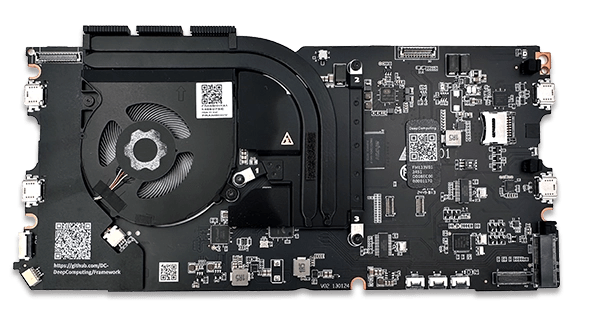
RISC-V is tier 2 in Rust toolchain support.
Extending drm_connector in Rust
My take on the current Rust toolchain support
I am not entirely sure the other architectures matter
I am having a hard time imagining someone hooking up consumer displays or panels to other architectures and wanting panel control support
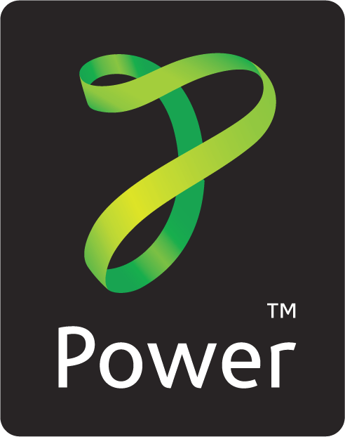
Extending drm_connector in Rust
Rust for Linux distro availability
Rust support in the kernel is marked experimental
Having a feature like this require Rust support might conflict with the intent of marking support "experimental", given how it would be widely used for personal computing applications of Linux
- NixOS
- Gentoo (trivial to enable)
- Arch Linux
- Ubuntu
CONFIG_RUST enabled in distro kernels
Extending drm_connector in Rust
What should we do next?
First, I want to heavily discuss with folks like Maxime Ripard. I plan to start with architecture design of the feature. The topic is language-agnostic.
In parallel, I plan to share this presentation with Maxime and get a better sense of his concerns.
Based on these conversations, either I go ahead with the implementation in Rust or do the core implementation in C.
Thank yous
I would like to thank Jason Gunthorpe for providing me help when I wanted to first contribute to the Linux kernel and for being a big inspiration for me. Jason has also been supportive of me when I want to explore these types of topics and independently contribute to the kernel.
Thanks, Maxime Ripard, for the feedback on the mailing list, and I am excited to share both architecture details and patches for supporting brightness control as well as other monitor control properties in the future.
Miguel, Danilo, and Benno have been instrumental in my journey writing Rust patches for the Linux kernel.
I am grateful to Benjamin Tissoires and Jiri Kosina for taking the time to review my changes on the HID side of things.